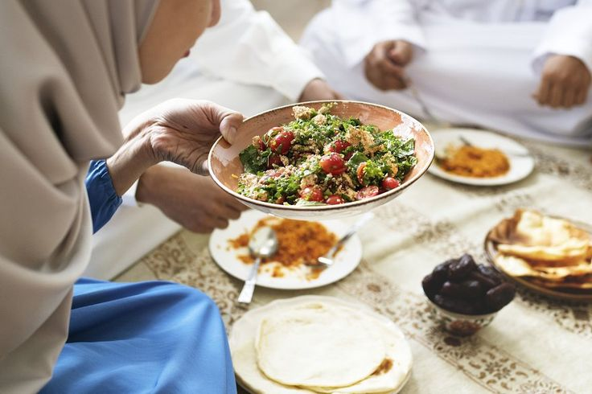
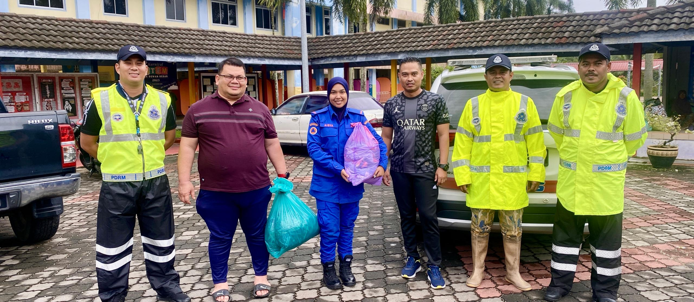
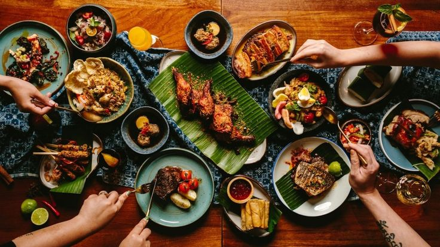

Cooking is a way for me to be creative and explore new flavors.
I enjoy trying new recipes and ingredients.
Sharing my food with others brings me happiness.
Cooking is a relaxing and rewarding activity.
It helps me connect with people over good meals.
Volunteering is important to me because it lets me help others.
I assist with food banks, community events, and environmental projects.
Volunteering teaches me the value of empathy and teamwork.
It feels good to give back to the community.
Video gaming is more than fun,it’s a way to challenge myself.
I like playing many types of games, from competitive ones to story-driven adventures.
Gaming lets me learn new skills and connect with others.
It’s a great way to relax and solve problems.
Food hunting is my way of finding new food experiences.
I explore local restaurants and markets to try different dishes.
I enjoy tasting unique flavors and learning about different cultures.
It’s more than eating it’s about discovering the people and stories behind the food.
